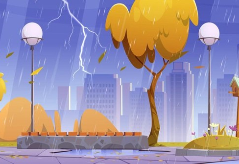
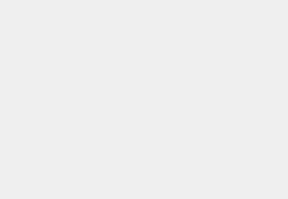

Cuaca yang Tidak Biasa: Dampaknya dan Bagaimana Menanggapinya
Menghadapi cuaca ekstrem memerlukan kesadaran, persiapan, dan kerjasama dalam komunitas. Dengan tindakan yang tepat, kita dapat mengurangi dampak cuaca ekstrem...

Cuaca Ekstrem dan Perubahan Iklim
Cuaca ekstrem telah menjadi lebih umum di seluruh dunia, dan banyak ilmuwan percaya bahwa perubahan iklim adalah penyebab utamanya. Dalam artikel ini, kita akan menjelaskan kaitan antara cuaca ekstrem dan perubahan...

Cuaca yang Tidak Biasa: Dampaknya dan Bagaimana Menanggapinya
Menghadapi cuaca ekstrem memerlukan kesadaran, persiapan, dan kerjasama dalam komunitas. Dengan tindakan yang tepat, kita dapat mengurangi dampak cuaca ekstrem...